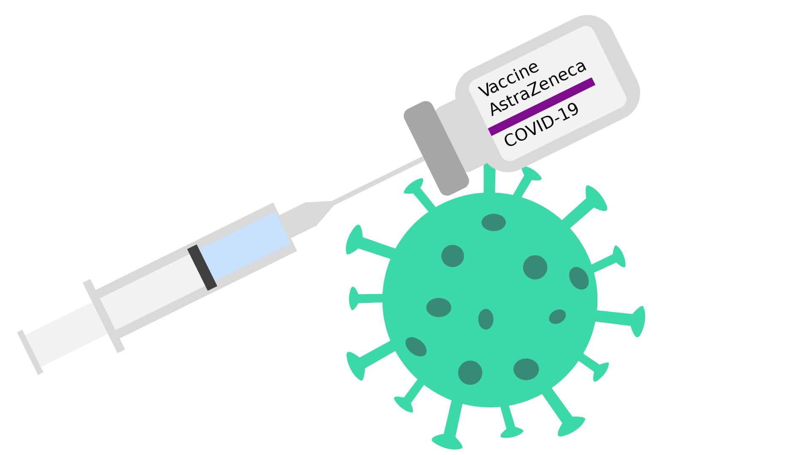
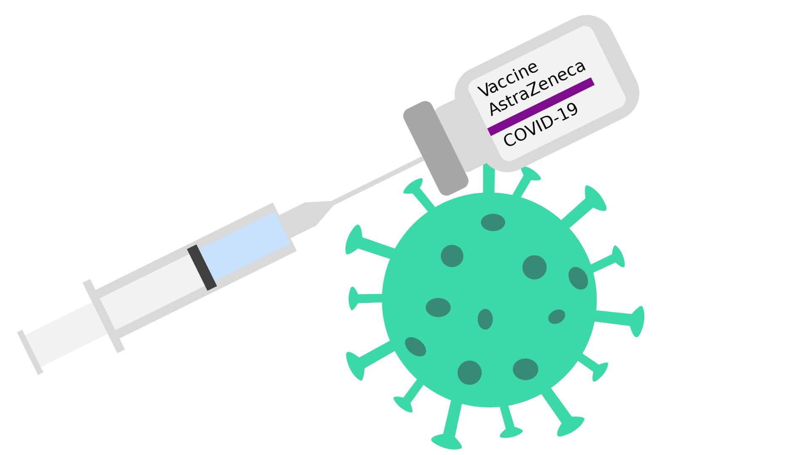

Auswertung
Du bist zu 60% bereit, das Risiko einiger der Nebenwirkungen der Anti-Baby-Pille einzugehen.
Allerdings sind einige davon auch ein komplettes No-Go für dich. Du weißt nicht genau was damit gemeint ist? Gerne zeigen wir dir welche Nebenwirkungen du als "nicht das Risiko wert" beurteilt hast:
 

Diese und viele weitere Nebenwirkungen können durch die Einnahme der Anti-Baby-Pille auftreten.